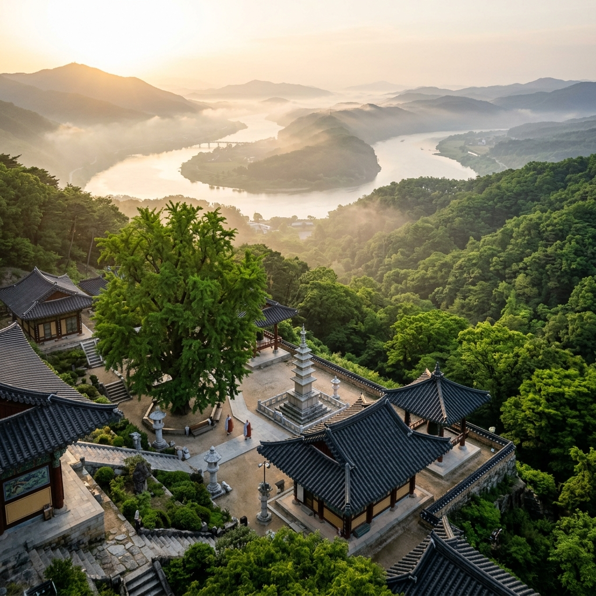
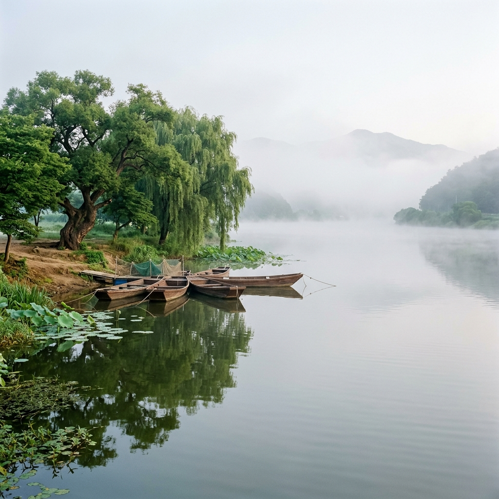
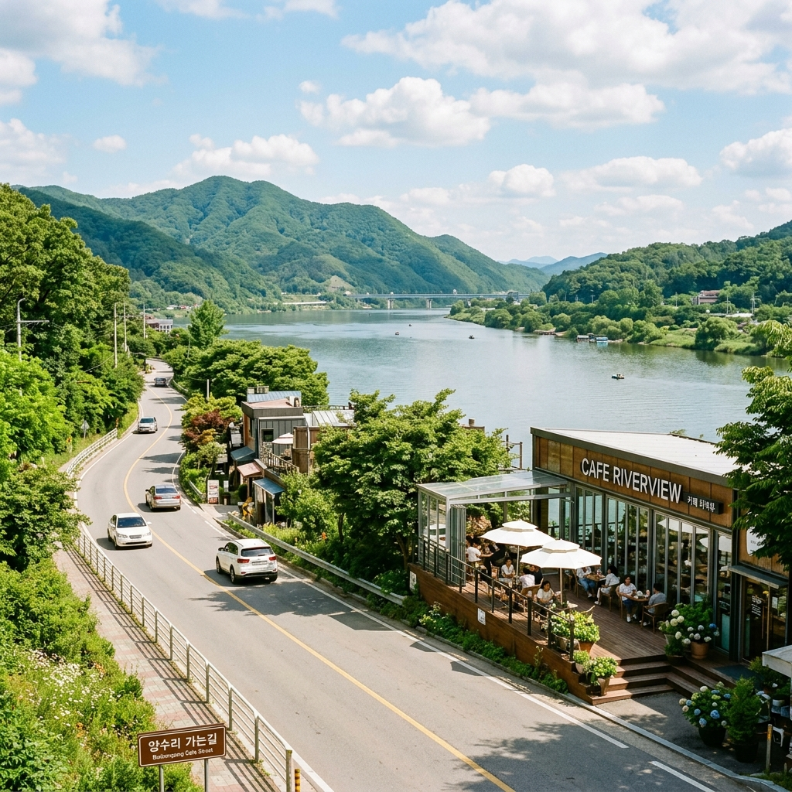

남양주 수종사·두물머리 6월 드라이브 — 북한강 조망 사찰과 양수리 카페 투어
경기도 남양주시 조안면, 운길산 중턱에 자리 잡은 수종사(水鍾寺)는 한국에서 가장 아름다운 강 조망을 자랑하는 사찰 중 하나로 꼽힙니다. 해발 610m 운길산을 30~40분 가파르게 올라야만 닿을 수 있는 이 작은 사찰에서는 북한강과 남한강이 합류하는 두물머리 일대가 한눈에 펼쳐집니다. 6월의 신록이 강물을 감싸고, 아침 물안개가 강 위를 부드럽게 덮어내리는 풍경은 말로는 온전히 전하기 어렵습니다.
두물머리(양수리)는 양평군 양서면에 위치한 북한강과 남한강의 합수부입니다. 수령 수백 년의 느티나무 군락과 연꽃 군락지, 그리고 사방이 강으로 둘러싸인 수변 산책로는 초여름 나들이객들의 발길을 끊임없이 불러들입니다. 수종사에서 내려다보는 두물머리, 그리고 두물머리에서 올려다보는 운길산 — 이 두 시점이 서로를 완성시키는 여행입니다.
이 글에서는 수종사 등산로 정보부터 경내 볼거리, 두물머리 수변 산책, 북한강변 카페거리 드라이브, 세미원 연계 코스, 교통·주차 정보까지 남양주·양평 초여름 여행의 모든 것을 상세히 안내합니다.
1. 수종사, 한국에서 가장 아름다운 강 조망 사찰
수종사는 대한불교조계종 제25교구 본사 소속으로, 경기도 남양주시 조안면 송촌리 운길산(雲吉山, 해발 610m) 중턱에 위치한 고찰입니다. 창건 설화에 따르면 조선 세조(世祖)가 금강산에서 한양으로 돌아오는 길에 운길산 굴 속에서 들려오는 종소리를 듣고 절을 세우게 했다고 하며, 이후 수종사(水鍾寺)라는 이름이 붙었습니다. 물소리가 종소리처럼 울린다는 뜻입니다.
이 사찰이 여행자들 사이에서 특별히 이름난 이유는 무엇보다 경내에서 바라보는 강 조망 때문입니다. 수종사 일주문을 지나 대웅전 앞마당에 서면, 발아래로 북한강과 남한강이 만나는 두물머리 일대가 시원하게 펼쳐집니다. 강폭이 넓은 북한강이 왼쪽에서 흘러오고, 남한강이 오른쪽에서 합류하는 장면을 높은 곳에서 한눈에 조망할 수 있는 곳은 수종사 외에 찾기 어렵습니다.
조선의 문장가 서거정(徐居正)은 수종사를 두고 "동방에서 제일 좋은 전망을 가진 절"이라 했습니다. 매월당 김시습, 초의선사 등도 이곳에서 강물을 내려다보며 시를 남겼습니다. 수백 년 전 선비들이 걸음을 멈추게 했던 그 풍경이 지금도 변함없이 이어지고 있다는 사실이 수종사를 더욱 특별하게 만들어줍니다.
6월에는 신록이 운길산 사면 전체를 짙은 초록으로 물들이고, 강안개가 북한강 위를 덮는 이른 아침 풍경이 특히 아름답습니다. 일출 직후의 수종사에서 강물 위로 퍼지는 물안개를 바라보는 경험은 도시 생활에서 잊고 살던 자연의 장대함을 온몸으로 상기시켜 줍니다.
수종사는 비교적 알려진 곳이지만, 접근하는 데 적지 않은 체력이 필요하기 때문에 여전히 붐비지 않는 호젓함을 유지하고 있습니다. 이른 아침 사찰의 목탁 소리와 새소리만이 가득한 고요한 경내는 바쁜 일상에 지친 몸과 마음을 빠르게 회복시켜 주는 힘을 지닙니다.

운길산 수종사에서 바라본 두물머리 — 6월 아침 물안개 / AI 제작 이미지
2. 6월 수종사 오르는 길 — 신록 속 가파른 산사 트레킹
수종사로 향하는 등산로는 운길산역 인근 들머리에서 시작됩니다. 총 거리는 약 1.8km로 그리 멀지 않지만, 경사가 상당히 가파른 구간이 이어지기 때문에 올라가는 데 보통 30~40분이 소요됩니다. 체력이 허락한다면 충분히 당일 왕복이 가능한 코스입니다.
등산로 초입은 비교적 완만한 흙길로 이루어져 있습니다. 하지만 중간 지점을 지나면서부터는 경사가 급격히 가팔라지며, 계단식으로 정비된 구간과 자연 암반이 이어집니다. 미끄럼 방지 처리가 된 등산화를 착용하는 것이 안전하며, 샌들이나 슬리퍼로는 오르기가 매우 불편합니다. 스틱(등산 폴) 하나를 챙기면 오름길과 내리막길 모두 훨씬 수월합니다.
6월의 등산로는 양옆으로 우거진 신록이 만들어내는 초록 터널 속을 걷는 것처럼 아름답습니다. 참나무, 단풍나무, 층층나무 등의 활엽수들이 잎을 활짝 펼쳐 해가 들지 않을 만큼 짙은 그늘을 만들어줍니다. 덕분에 6월의 더운 날씨에도 숲길 안은 서늘하게 유지되어 오르는 내내 시원한 바람을 맞을 수 있습니다.
등산로 중간에는 간간이 열리는 조망 포인트가 있어 잠시 숨을 고르며 강 아래를 내려다볼 수 있습니다. 점점 고도가 높아질수록 북한강의 넓은 강폭이 시야에 들어오기 시작하고, 정상 부근에 가까워질수록 두물머리의 전경이 서서히 펼쳐집니다. 힘들게 오르면서도 자꾸만 뒤를 돌아보게 만드는 풍경입니다.
수종사는 차량 진입이 일부 가능하지만, 좁고 가파른 산길이라 일반 승용차로 오르기에는 부담이 있습니다. 대부분의 방문객은 걸어서 오르는 것을 권장합니다. 아이를 동반한 경우에는 5세 이상, 성인이 충분히 돕는 조건이라면 어렵지 않게 오를 수 있습니다. 무릎 통증이 있는 분들은 내리막길이 더 힘들 수 있으니 스틱을 꼭 챙기세요.
3. 수종사 경내 볼거리 — 500년 은행나무와 두 석탑
힘겨운 오름길 끝에 수종사 일주문을 통과하면 경내의 고요하고 차분한 분위기가 온몸을 감쌉니다. 규모가 크지 않은 사찰이지만, 경내 곳곳에 담긴 역사와 자연이 만들어내는 조화가 오래도록 머물고 싶게 합니다.
경내에서 가장 먼저 눈길을 사로잡는 것은 수령 약 500년의 거대한 은행나무입니다. 경기도 기념물로 지정된 이 은행나무는 사찰의 역사와 함께 수백 년을 버텨온 산증인입니다. 가을에는 황금빛 단풍으로 유명하지만, 6월의 은행나무는 짙은 녹색의 잎을 활짝 펼쳐 경내에 시원한 그늘을 만들어냅니다. 이 나무 아래에 서면 나무가 내뿜는 청량한 기운과 함께 수백 년의 시간이 느껴지는 듯합니다.
대웅전 앞마당에는 두 기의 석탑이 나란히 서 있습니다. 고려시대와 조선시대에 각각 조성된 것으로 추정되는 이 탑들은 경내의 고즈넉한 분위기와 잘 어울립니다. 탑 뒤로 펼쳐지는 강 조망과 함께 담으면 수종사를 대표하는 사진 구도가 완성됩니다.
수종사의 작은 다실(茶室)도 놓치기 아까운 공간입니다. 경내 한켠에 마련된 다실에서는 자원봉사자들이 방문객들에게 차를 한 잔 대접합니다. 별도의 비용이 없으며, 자리에 앉아 강 조망을 바라보며 차를 마시는 시간은 수종사 방문의 하이라이트라고 해도 과언이 아닙니다. 다실 운영은 날씨와 시기에 따라 변동이 있을 수 있으니 현장에서 확인하세요.
수종사에서의 시간은 서두르지 않는 것이 좋습니다. 경내 벤치에 앉아 강물을 내려다보고, 은행나무 아래를 천천히 걸으며, 석탑 앞에서 합장해 보는 여유가 이 사찰을 제대로 즐기는 방법입니다. 사찰 예절을 지키며 조용히 경내를 둘러보는 것도 잊지 마세요.
4. 두물머리 수변 산책 — 물안개와 느티나무 군락
수종사에서 내려오면 차로 10분도 안 되는 거리에 두물머리가 있습니다. 경기도 양평군 양서면에 위치한 두물머리는 북한강과 남한강이 하나로 만나는 합수부로, 예로부터 '양수리(兩水里)'라는 지명으로도 불려왔습니다. 두 강이 만나는 지점이기에 수변 경관이 사방으로 펼쳐지는 광활함이 특징입니다.
두물머리를 상징하는 풍경은 단연 수령 수백 년의 느티나무 군락입니다. 강변 수변 공간에 우뚝 서 있는 느티나무들은 6월이 되면 짙은 녹음을 드리워 더위를 가려주는 천연 파라솔 역할을 합니다. 나무 아래에 자리를 잡고 강물을 바라보고 있으면 시간이 얼마나 흘렀는지도 모르게 됩니다. 이른 아침에는 강 위로 피어오르는 물안개와 느티나무가 어우러져 한 폭의 수묵화 같은 풍경을 연출합니다.
두물머리 수변 산책로는 정비가 잘 되어 있어 남녀노소 누구나 편하게 걸을 수 있습니다. 강변을 따라 이어지는 데크길을 걸으면서 북한강과 남한강이 하나로 합쳐지는 지점을 바라보는 것도 특별한 경험입니다. 산책로 중간에는 사진 찍기 좋은 조망 포인트들이 여러 곳 마련되어 있습니다.
6월 두물머리에는 연꽃 군락지도 조성되어 있어, 이른 아침에는 물안개와 함께 피어나는 연잎들을 감상할 수 있습니다. 7월이 되어야 연꽃이 본격적으로 개화하지만, 6월 하순에도 일부 연꽃이 꽃봉오리를 내밀기 시작합니다. 연꽃 철보다 오히려 6월의 두물머리가 더 한적하고 여유롭게 즐길 수 있어 좋다는 의견도 많습니다.

두물머리 이른 아침 물안개와 느티나무 — 6월 초여름의 고요한 풍경 / AI 제작 이미지
5. 북한강·남한강 합수부 — 명당 포인트와 사진 찍기 좋은 곳
두물머리는 오래전부터 풍수지리상의 명당으로 여겨져 왔습니다. 두 강이 만나는 합수부에는 기(氣)가 모인다는 믿음이 있었기 때문입니다. 실제로 이곳에 서면 광활한 수면이 사방으로 펼쳐지고, 멀리 산들이 강을 에워싸고 있는 지형이 강렬한 인상을 줍니다.
두물머리 최고의 사진 포인트는 느티나무 군락 앞 강변 데크입니다. 수백 년 수령의 느티나무를 배경으로 강물과 함께 담으면 계절감이 풍부한 사진이 나옵니다. 이른 아침 안개가 끼는 날에는 역광 실루엣 사진을 찍기에 최적의 조건이 갖춰집니다. 일몰 시간대에도 강 수면이 붉게 물드는 황금빛 풍경이 연출되어 많은 사진작가들이 즐겨 찾는 명소입니다.
두 번째 포인트는 합수부 끝자락, 두 강이 실제로 만나는 지점에서 바라보는 전망입니다. 강폭이 넓어지면서 강 한가운데 작은 모래톱이 형성되는 경우도 있어 독특한 경관을 연출합니다. 한쪽으로는 북한강의 물색, 다른 쪽으로는 남한강의 물색이 서로 만나는 경계선이 어렴풋이 보이기도 합니다.
세 번째 포인트는 두물머리 연꽃 군락지입니다. 강변 수생 식물이 조성된 구역으로, 이른 아침에는 연잎 위 이슬과 피어오르는 안개가 더해져 신비로운 분위기를 자아냅니다. 6월에는 연꽃 개화 전이지만 드넓게 펼쳐진 연잎들 자체만으로도 충분히 아름다운 피사체가 됩니다.
수종사에서 내려다보는 두물머리와 두물머리에서 올려다보는 운길산·수종사는 서로를 완성시키는 조망입니다. 양쪽에서 각각의 시점을 경험하는 것이 이번 여행의 핵심 묘미이니, 두 장소를 모두 방문하는 일정을 꼭 계획하시기 바랍니다.
6. 조안·양수리 북한강변 카페거리 드라이브
수종사와 두물머리를 둘러본 후에는 북한강변 카페거리 드라이브가 여행을 마무리하는 달콤한 코스가 됩니다. 경기도 남양주시 조안면에서 양평군 양서면에 이르는 북한강변 도로(국도 45호선 일부 구간 및 지방도)에는 강을 바라보며 쉬어갈 수 있는 크고 작은 카페들이 즐비하게 늘어서 있습니다.
이 카페거리의 가장 큰 매력은 북한강과 산이 어우러진 탁 트인 조망입니다. 대부분의 카페가 강을 향해 대형 창문이나 테라스를 갖추고 있어, 커피 한 잔을 들고 강물을 바라보는 여유로운 시간을 즐길 수 있습니다. 6월에는 강변의 나무들이 초록 풍성하게 잎을 펼쳐 카페 창밖 풍경이 특히 아름답습니다.
운길산역 근처에는 수종사 등산 후 들르기 좋은 아늑한 카페들이 여럿 있습니다. 두물머리 주변으로는 대형 베이커리 카페와 한강뷰 루프탑 카페 등 다양한 컨셉의 공간들이 자리하고 있습니다. 어느 쪽을 선택해도 강을 바라보는 뷰가 보장되는 것이 이 지역 카페거리의 강점입니다.
드라이브 코스는 운길산역 → 조안 북한강변 도로 → 두물머리 → 양수리 카페거리 → 세미원 방향으로 이어집니다. 강을 따라 구불구불하게 이어지는 도로가 풍경이 좋고 교통이 복잡하지 않아 드라이브 자체도 즐거운 코스입니다. 총 이동 거리는 약 10~15km 내외로, 여유 있게 이동하면서 풍경을 감상할 수 있습니다.
카페 방문 시에는 주차 공간이 협소한 곳들이 많으니 미리 확인하는 것이 좋습니다. 주말 오후에는 인기 카페의 경우 대기 줄이 생기기도 합니다. 오전 일찍 수종사와 두물머리를 마치고 점심 전후에 카페를 들르는 일정이 기다림 없이 여유를 즐기기에 좋습니다.

조안·양수리 북한강변 카페거리 — 6월 초여름 드라이브 코스 / AI 제작 이미지
7. 양평 세미원 연계 코스 — 7월 연꽃 시즌 예고 관람
두물머리에서 차로 5분도 안 되는 거리에 세미원(洗美苑)이 있습니다. 경기도 양평군 양서면에 위치한 세미원은 북한강과 남한강이 합류하는 지점 옆에 조성된 수생 식물 전문 공원으로, '물을 씻고 마음을 아름답게 한다'는 의미를 담고 있습니다.
세미원의 주인공은 단연 연꽃입니다. 국내 최대 규모의 연꽃 공원 중 하나로 꼽히는 이곳에는 수십 종의 연꽃과 수련이 식재되어 있습니다. 본격적인 연꽃 개화 시즌은 7월 초순부터 8월까지지만, 6월 하순에는 연잎이 수면을 가득 채우고 일부 수련이 꽃을 피우기 시작하면서 개화 전야의 풍성한 분위기를 느낄 수 있습니다.
6월에 세미원을 방문하면 7월 연꽃 시즌의 '예고편'을 즐기는 셈입니다. 연잎들이 푸르게 수면을 덮고, 군데군데 수련이 꽃봉오리를 맺는 풍경은 그 자체로도 충분히 아름답습니다. 관람객이 7월보다 적어 여유롭게 공원을 산책할 수 있다는 것도 6월 방문의 장점입니다.
세미원의 관람 시간은 오전 9시~오후 6시(계절·요일별 상이)이며, 입장료가 있습니다. 성인 기준 5,000원 내외입니다. 공원 내에는 넓은 수생 식물원, 장독대 정원, 돌다리 산책로 등 다양한 볼거리가 있어 두물머리와 함께 반나절 코스로 즐기기에 충분합니다. 공식 홈페이지에서 입장료와 운영 시간을 방문 전에 확인하는 것을 권장합니다.
세미원을 나오면 두물머리 연꽃단지와 함께 양평 일대를 더 둘러볼 수 있습니다. 자전거 대여소가 있어 두물머리~세미원 구간을 자전거로 이동하는 것도 인기 있는 방법입니다. 강변 자전거길이 잘 정비되어 있어 체력이 허락한다면 자전거 투어도 훌륭한 선택입니다.
8. 교통·주차·방문 시간 및 팁
수종사와 두물머리를 여행하는 데 가장 편한 방법은 자가용 이용입니다. 수도권에서 접근성이 좋아 서울 기준 1시간~1시간 30분이면 도착할 수 있습니다. 내비게이션에 '수종사 주차장' 또는 '운길산 수종사'를 입력하면 됩니다. 수종사 인근에 소규모 주차 공간이 있으며, 주말 오전에는 다소 혼잡할 수 있으니 오전 8시 이전 도착을 목표로 하는 것이 좋습니다.
대중교통으로는 경의중앙선 운길산역을 이용하는 방법이 가장 편리합니다. 서울 용산역에서 경의중앙선을 타면 약 1시간 10분 내외로 운길산역에 도착합니다. 운길산역에서 수종사 들머리까지는 도보로 약 10~15분 거리입니다. 두물머리는 운길산역 또는 양수역(경의중앙선)에서 이동 가능하며, 역에서 도보 약 15~20분이 소요됩니다. 짐이 많거나 이동이 불편하다면 택시를 이용하는 것이 현명합니다.
수종사 방문 추천 시간은 이른 아침입니다. 강안개가 피어오르는 일출 후 1~2시간이 가장 아름다운 조망을 볼 수 있는 시간대입니다. 오전 6~8시 사이에 오르면 관람객도 적고 풍경도 가장 멋집니다. 사찰이기 때문에 예불 시간(새벽·저녁)에는 조용히 배려하는 것이 예의입니다.
두물머리 방문도 이른 아침이 가장 좋습니다. 물안개는 해가 뜨고 기온이 오르면 금세 걷히기 때문에, 아침 6~7시대에 현장에 도착하는 것이 이상적입니다. 물안개 풍경을 목적으로 한다면 전날 가까운 숙소에서 1박하고 이른 아침에 방문하는 일정을 추천합니다.
카페거리 드라이브는 오전 일정을 마친 후 오전 10시~오후 2시 사이가 카페 대부분이 영업을 시작하는 시간이라 적합합니다. 세미원은 입장 마감 시간이 있으니 오후 4시 이전에 방문하는 것을 권장합니다.
9. 남양주 수종사 여행 완벽 준비 가이드
이번 여행을 계획하면서 미리 챙겨두면 도움이 되는 준비 사항들을 정리했습니다. 먼저 복장은 등산화 또는 미끄럼 방지 운동화가 필수입니다. 수종사 오름길은 경사가 가파르고 일부 암반 구간이 있어 슬리퍼나 일반 운동화로는 오르기 어렵습니다. 6월이라도 산 위는 서늘할 수 있으니 얇은 겉옷을 챙기세요.
물과 간식은 넉넉하게 준비하는 것이 좋습니다. 수종사 경내에 자판기나 매점이 없기 때문에, 오름길에 필요한 물과 간단한 행동식은 출발 전에 준비해야 합니다. 등산로 기점 인근에 편의점이나 작은 가게들이 있으니 이곳에서 보충할 수 있습니다.
카메라나 스마트폰 배터리를 충분히 충전해 두세요. 수종사 조망, 두물머리 물안개, 카페거리 풍경까지 사진 찍을 순간이 많습니다. 보조 배터리를 챙기면 더욱 안심이 됩니다.
방문 시기와 관련해서는, 6월 중 되도록 평일이나 주말 이른 오전을 선택하면 수종사와 두물머리 모두 혼잡 없이 즐길 수 있습니다. 주말 오후에는 두물머리가 특히 붐비는 편입니다.
식사는 양수리 인근에 순두부, 닭갈비, 쌈밥 등 경기도 향토 음식을 파는 식당들이 있습니다. 두물머리 근처 강변 식당가에서 한적하게 식사하는 것도 좋은 선택입니다. 세미원을 함께 방문한다면 공원 내 카페에서 간단하게 허기를 달랠 수 있습니다.
| 항목 | 내용 |
|---|
| 수종사 위치 | 경기도 남양주시 조안면 운길산로 727번길 372 |
| 운길산 해발 | 610m (수종사는 중턱) |
| 등산 거리 | 약 1.8km, 소요 30~40분 (경사 가파름) |
| 수종사 은행나무 | 수령 약 500년, 경기도 기념물 |
| 두물머리 위치 | 경기도 양평군 양서면 양수리 |
| 세미원 입장료 | 성인 약 5,000원 (방문 전 공식 확인 권장) |
| 대중교통 | 경의중앙선 운길산역 하차 → 도보 10~15분 |
| 서울 출발 소요 시간 | 자가용 약 1시간~1시간 30분 |
| 추천 방문 시간 | 오전 6~9시 (이른 아침 물안개 최적) |
#수종사
#두물머리
#남양주여행
#북한강드라이브
#운길산
#양수리카페
#6월여행
#경기도여행
#산사여행
#한강조망